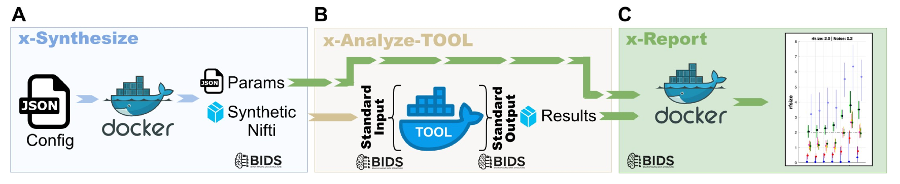
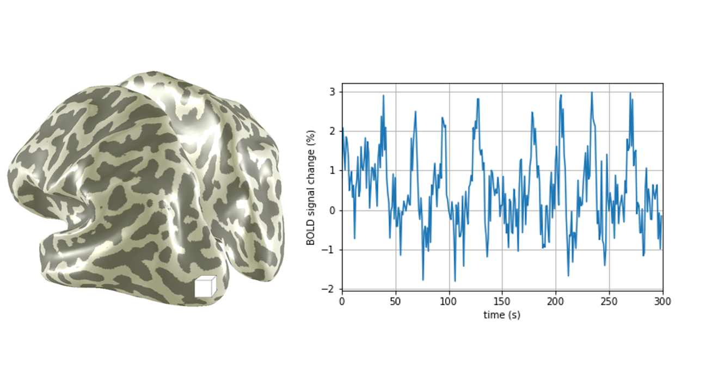
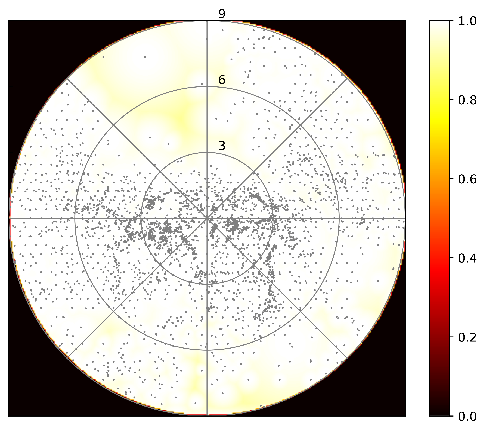
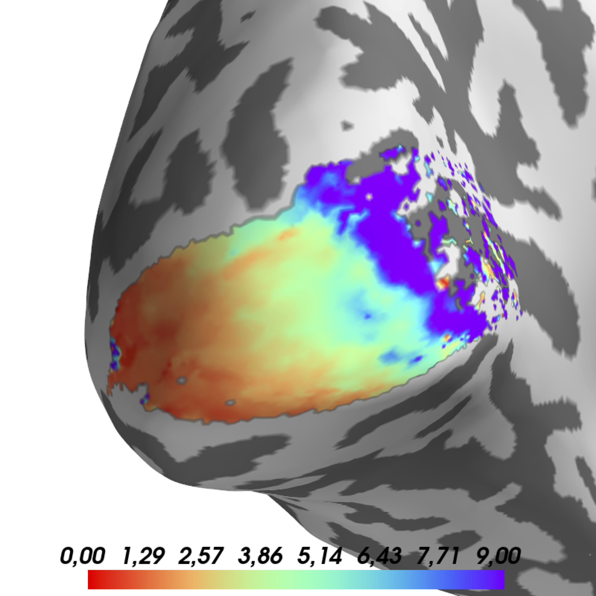
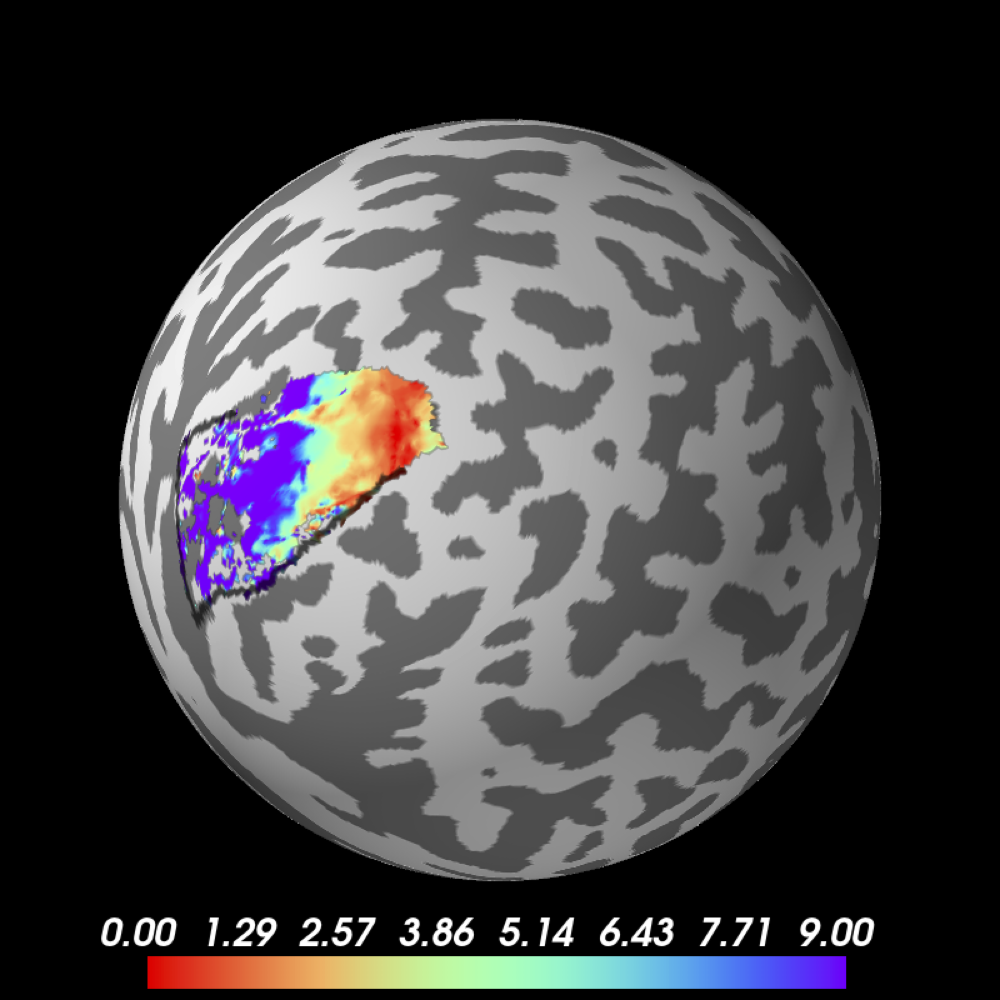

Results remain sensitive to variations in
stimulus design (e.g. Chang (2025), Pawloff (2023), Linhardt (2021), Alvarez(2025))
preprocessing (e.g. Linhardt (2025))
analysis environment and software (e.g. Lerma-Usabiaga (2020))
Have a look on the analysis of the last study
$ tree
.
├── preproc
│ ├── TEST
│ │ ├── ret14-02
│ │ └── ret14-03
│ ├── ret14-01
│ ├── ret14-02
│ ├── ret14-03
│ ├── ret14-03.bkp
│ ├── ret14-04
│ ├── ret14-05
│ └── ret14-06
└── preproc2
├── BACKUPret14-04
├── OLD2ret14-03
├── OLDret14-03
├── _ret14-03
├── ret14-01
├── ret14-02
├── ret14-02_NEW
├── ret14-03
└── ret14-04This is not a problem, just check the scripts folder
$ ls -l /z/fmrilab/lab/RETPipeline/Scripts
GetPRFParameters.m
MYrmJitterImages.m
MyStrSplit.m
RET15Reliability.m
RETAllPRFCenterHistogram.m
RETAllTasksAllRunsConcatAndMelodic.m
RETApplyMelodic.m
RETAssignGLMParams.m
RETAverageInplaneRunsAndXformToGray.m
RETBiasFieldCorrection.m
RETCREATEFACTORPLOTS.m
RETCREATESTATS.m
RETCalcAndPlotMeanHistogram.m
RETCalcAndPlotMeanHistogramBACKK.m
RETCalcCorrelationCoef.m
RETCalcCorrelationCoefPol.m
RETCalcHistoDifferences.m
RETCalcParameterErrors.m
RETCalcSummaryCoefficientStat.m
RETCalcSummaryCoefficientStatChange.m
RETCalcSummaryCoefficientStatReliability.m
'RETCalcVarExp (1).m'
RETCalcVarExp.m
RETCalculateMelodic.m
RETCalculatePValueFromVarExp.m
RETCheckActiveROIVoxels.m
RETCheckAlignment.m
RETCheckAllSignVoxels.m
RETCheckForSmoothedData.m
RETCheckSignVoxels.m
RETClassicEyetrackerCorrection.m
RETClean.m
RETCleanMACFUNC.m
RETCombineDifferentTasks.m
RETCombineSingleBand.m
RETCombineandCoregTopup.m
RETCompareAllVarExp.m
RETCompareVarExp.m
RETConcatParamsFile.m
RETConcatRuns.m
RETConvertAllRunsToWhichRuns.m
RETConvertDatatype.m
RETConvertToLPI.m
RETCoregisterSingleBandToMeanFunctional.m
RETCorrectStableRunsForMeanFixation.m
RETCreateArtificialFullfieldVolume.m
RETCreateArtificialFullfieldVolumeNifti.m
RETCreateBigSummaryCoefficientsTXT.m
'RETCreateBigSummaryCoefficientsTXT_varexp (1).m'
RETCreateBigSummaryCoefficientsTXT_varexp.m
RETCreateDataStruct.m
RETCreateEccvsSigmaSummaryData.m
RETCreateFolders.m
RETCreateInplaneAnatomy.m
RETCreateMeanFitDist.m
RETCreateMicroperimetryColormap.m
RETCreatePDFWithVariableWidths.m
RETCreateParadigmsFile.m
RETCreateRuns.m
RETCreateSubjectAndSessionList.m
RETDefineDataTypesStruct.m
RETDefinemrVistaDirectory.m
RETDiffMaps.m
RETDistFactorSNRComparison.m
RETDoMelodic.m
RETExpandSessions.m
RETExtractROIData.m
RETFreesurferSegmentation.m
RETFullFieldParams.m
RETGazeSpectrum.m
RETGetActiveFullfieldROIVoxels.m
RETGetMiddleDicomHeaderInfo.m
RETGetNumberOfNormalRuns.m
RETGetNumberOfRuns.m
RETGetSignificantEccThreshVoxels.m
RETGetSignificantVoxels.m
RETGetStableGazerCenterDeviation.m
RETGetTSeriesandModel.m
RETGetVols.m
RETImportDICOMS.m
RETInitializeGray.m
RETInitmrVista.m
RETInplaneFullfieldmrVista.m
RETLoadSummaryCCForTTest.m
RETLoadSummaryVarExpForTTest.m
RETLoadSummaryVarExpForTTest_CompareGroups.m
RETMAE.m
RETMASTERCREATEFACTORPLOTS.m
RETMP2RAGEdenoise.m
RETMakeCoveragePlots.m
RETMakeRET15Hists.m
RETMakeScotDist.m
RETMakeScotDistFromRFCov.m
RETMakeScotDistVariableWidth.m
RETMakeSummaryCorrelationCoefficients.m
RETMakeSummaryCorrelationCoefficientsMean.m
RETMakeSummaryCorrelationCoefficientsMean_varexp.m
RETMakeXYandECCPlots.m
RETNonBinaryCorrection.m
RETNormalize.m
RETNormalizeToIntervall.m
RETOLDConcatRuns.m
RETOLDPerformAlignment.m
RETOLDPostSegmentationAnalysis.m
RETPOSTBATCH1.m
RETPOSTBATCH2.m
RETPOSTBATCH3.m
RETPOSTBATCH4.m
RETPOSTBATCH5.m
RETPOSTBATCH6.m
RETPRFCenterHistogram.m
RETPerformAlignment.m
RETPerformEyetrackerCorrection.m
RETPhysioCorrection.m
RETPlotAllCoverage.m
RETPlotAllGazeSpectra.m
RETPlotCorrelation.m
RETPlotCoverage.m
RETPlotScotDist.m
RETPlotScotDistVarExpMeans.m
RETPlotScotDistVisualRegionsMeans.m
RETPlotXYandECCRegressionPlots.m
RETPolarAngleMeanRFCov.m
RETPostSegmentationAnalysis.m
RETPreSegmentationAnalysis.m
RETQuantifyScotoma.m
RETQuantifySingleSubjectScotoma.m
RETQwarp.m
RETRealignPrevious.m
RETRealignment.m
RETSAVEALLRELIABILITYDATA.m
RETSAVEALLSTATS.m
RETSAVEMEANCORRECTEDDATA.m
RETSPMCenterSurround.m
RETSPMFullField.m
RETSPMFullFieldFake.m
RETSaveAllCorrelationCoefficients.m
RETSaveAllCorrelationCoefficients_MeanCorrected.m
RETSaveAllCoveragePlots.m
RETSaveAllDiffParameterMaps.m
RETSaveAllDiffParameterMapsR1VR2.m
RETSaveAllDiffParameterMapsRandSaccETCorrVSStable.m
RETSaveAllDiffParameterMapsRandSaccVSStable.m
RETSaveAllEccData.m
RETSaveAllEccvsSigma.m
RETSaveAllImages.m
RETSaveAllParameters.m
RETSaveAllParametersMeanCorrected.m
RETSaveAllRFCovData.m
RETSaveAllSigmaLookups.m
RETSaveAllSignVoxelIndices.m
RETSaveAllSignVoxelIndicesRET15.m
RETSaveEccData.m
RETSaveEccvsSigma.m
RETSaveImage.m
RETSaveImageLea.m
RETSaveMeanEccvsSigma.m
RETSaveParameter.m
RETSavePerimetryOnlyDataPoints.m
RETSaveRFCovData.m
RETSaveRun12CorrelationCoefficients.m
RETSaveRun12SummaryCorrelationCoefficientsSummary.m
RETSaveRun12SummaryCorrelationCoefficientsSummary_MeanCorrected.m
RETSaveRunCorrelationCoefficients.m
RETSaveRunSummaryCorrelationCoefficientsSummary.m
RETSaveSigmaLookup.m
RETSaveSignVoxelIndices.m
RETSetAllCustomThreshold.m
RETSetAllFullfieldThreshold.m
RETSetConcatEightbarsAsDefaults.m
RETSetCustomThreshold.m
RETSetFullfieldThreshold.m
RETSetParamsForInitmrVista.m
RETShiftDicoms.m
RETShowMAEAdvantages.m
RETShowOnlyROIData.m
RETSignRankTests.m
RETSignRankTestsEXAKT.m
RETSignRankTestsReliability.m
RETSliceTiming.m
RETSmoothing.m
RETTTests.m
RETToAnatSpace.m
RETTopup.m
RETUnwarp.m
RETUnwarpOrTopup.m
RETaddOLDmrVista.m
RETaddmrVista.m
RETinterativeScotomaEstimation.m
RETiterativeScotomaEstimation.m
RETlinkHeudiconv.m
RETrmOLDmrVista.m
RETrmPlotCoverage.m
RETrmmrVista.m
STIMSIM22_PostBatch.m
STIMSIM22_PreBatch.m
blalaa.m
ea_antsmat2mat.m
kde.m
kde2d.m
parfor_progressbar.m
rmNonBinaryCorrection.m
rsl_ls.m
rsl_makelist.mand it was running on one server only…
with the correct user…
$ ls -l /z/fmrilab/lab/RETPipeline/Scripts
GetPRFParameters.m
MYrmJitterImages.m
MyStrSplit.m
RET15Reliability.m
RETAllPRFCenterHistogram.m
RETAllTasksAllRunsConcatAndMelodic.m
RETApplyMelodic.m
RETAssignGLMParams.m
RETAverageInplaneRunsAndXformToGray.m
RETBiasFieldCorrection.m
RETCREATEFACTORPLOTS.m
RETCREATESTATS.m
RETCalcAndPlotMeanHistogram.m
RETCalcAndPlotMeanHistogramBACKK.m
RETCalcCorrelationCoef.m
RETCalcCorrelationCoefPol.m
RETCalcHistoDifferences.m
RETCalcParameterErrors.m
RETCalcSummaryCoefficientStat.m
RETCalcSummaryCoefficientStatChange.m
RETCalcSummaryCoefficientStatReliability.m
'RETCalcVarExp (1).m'
RETCalcVarExp.m
RETCalculateMelodic.m
RETCalculatePValueFromVarExp.m
RETCheckActiveROIVoxels.m
RETCheckAlignment.m
RETCheckAllSignVoxels.m
RETCheckForSmoothedData.m
RETCheckSignVoxels.m
RETClassicEyetrackerCorrection.m
RETClean.m
RETCleanMACFUNC.m
RETCombineDifferentTasks.m
RETCombineSingleBand.m
RETCombineandCoregTopup.m
RETCompareAllVarExp.m
RETCompareVarExp.m
RETConcatParamsFile.m
RETConcatRuns.m
RETConvertAllRunsToWhichRuns.m
RETConvertDatatype.m
RETConvertToLPI.m
RETCoregisterSingleBandToMeanFunctional.m
RETCorrectStableRunsForMeanFixation.m
RETCreateArtificialFullfieldVolume.m
RETCreateArtificialFullfieldVolumeNifti.m
RETCreateBigSummaryCoefficientsTXT.m
'RETCreateBigSummaryCoefficientsTXT_varexp (1).m'
RETCreateBigSummaryCoefficientsTXT_varexp.m
RETCreateDataStruct.m
RETCreateEccvsSigmaSummaryData.m
RETCreateFolders.m
RETCreateInplaneAnatomy.m
RETCreateMeanFitDist.m
RETCreateMicroperimetryColormap.m
RETCreatePDFWithVariableWidths.m
RETCreateParadigmsFile.m
RETCreateRuns.m
RETCreateSubjectAndSessionList.m
RETDefineDataTypesStruct.m
RETDefinemrVistaDirectory.m
RETDiffMaps.m
RETDistFactorSNRComparison.m
RETDoMelodic.m
RETExpandSessions.m
RETExtractROIData.m
RETFreesurferSegmentation.m
RETFullFieldParams.m
RETGazeSpectrum.m
RETGetActiveFullfieldROIVoxels.m
RETGetMiddleDicomHeaderInfo.m
RETGetNumberOfNormalRuns.m
RETGetNumberOfRuns.m
RETGetSignificantEccThreshVoxels.m
RETGetSignificantVoxels.m
RETGetStableGazerCenterDeviation.m
RETGetTSeriesandModel.m
RETGetVols.m
RETImportDICOMS.m
RETInitializeGray.m
RETInitmrVista.m
RETInplaneFullfieldmrVista.m
RETLoadSummaryCCForTTest.m
RETLoadSummaryVarExpForTTest.m
RETLoadSummaryVarExpForTTest_CompareGroups.m
RETMAE.m
RETMASTERCREATEFACTORPLOTS.m
RETMP2RAGEdenoise.m
RETMakeCoveragePlots.m
RETMakeRET15Hists.m
RETMakeScotDist.m
RETMakeScotDistFromRFCov.m
RETMakeScotDistVariableWidth.m
RETMakeSummaryCorrelationCoefficients.m
RETMakeSummaryCorrelationCoefficientsMean.m
RETMakeSummaryCorrelationCoefficientsMean_varexp.m
RETMakeXYandECCPlots.m
RETNonBinaryCorrection.m
RETNormalize.m
RETNormalizeToIntervall.m
RETOLDConcatRuns.m
RETOLDPerformAlignment.m
RETOLDPostSegmentationAnalysis.m
RETPOSTBATCH1.m
RETPOSTBATCH2.m
RETPOSTBATCH3.m
RETPOSTBATCH4.m
RETPOSTBATCH5.m
RETPOSTBATCH6.m
RETPRFCenterHistogram.m
RETPerformAlignment.m
RETPerformEyetrackerCorrection.m
RETPhysioCorrection.m
RETPlotAllCoverage.m
RETPlotAllGazeSpectra.m
RETPlotCorrelation.m
RETPlotCoverage.m
RETPlotScotDist.m
RETPlotScotDistVarExpMeans.m
RETPlotScotDistVisualRegionsMeans.m
RETPlotXYandECCRegressionPlots.m
RETPolarAngleMeanRFCov.m
RETPostSegmentationAnalysis.m
RETPreSegmentationAnalysis.m
RETQuantifyScotoma.m
RETQuantifySingleSubjectScotoma.m
RETQwarp.m
RETRealignPrevious.m
RETRealignment.m
RETSAVEALLRELIABILITYDATA.m
RETSAVEALLSTATS.m
RETSAVEMEANCORRECTEDDATA.m
RETSPMCenterSurround.m
RETSPMFullField.m
RETSPMFullFieldFake.m
RETSaveAllCorrelationCoefficients.m
RETSaveAllCorrelationCoefficients_MeanCorrected.m
RETSaveAllCoveragePlots.m
RETSaveAllDiffParameterMaps.m
RETSaveAllDiffParameterMapsR1VR2.m
RETSaveAllDiffParameterMapsRandSaccETCorrVSStable.m
RETSaveAllDiffParameterMapsRandSaccVSStable.m
RETSaveAllEccData.m
RETSaveAllEccvsSigma.m
RETSaveAllImages.m
RETSaveAllParameters.m
RETSaveAllParametersMeanCorrected.m
RETSaveAllRFCovData.m
RETSaveAllSigmaLookups.m
RETSaveAllSignVoxelIndices.m
RETSaveAllSignVoxelIndicesRET15.m
RETSaveEccData.m
RETSaveEccvsSigma.m
RETSaveImage.m
RETSaveImageLea.m
RETSaveMeanEccvsSigma.m
RETSaveParameter.m
RETSavePerimetryOnlyDataPoints.m
RETSaveRFCovData.m
RETSaveRun12CorrelationCoefficients.m
RETSaveRun12SummaryCorrelationCoefficientsSummary.m
RETSaveRun12SummaryCorrelationCoefficientsSummary_MeanCorrected.m
RETSaveRunCorrelationCoefficients.m
RETSaveRunSummaryCorrelationCoefficientsSummary.m
RETSaveSigmaLookup.m
RETSaveSignVoxelIndices.m
RETSetAllCustomThreshold.m
RETSetAllFullfieldThreshold.m
RETSetConcatEightbarsAsDefaults.m
RETSetCustomThreshold.m
RETSetFullfieldThreshold.m
RETSetParamsForInitmrVista.m
RETShiftDicoms.m
RETShowMAEAdvantages.m
RETShowOnlyROIData.m
RETSignRankTests.m
RETSignRankTestsEXAKT.m
RETSignRankTestsReliability.m
RETSliceTiming.m
RETSmoothing.m
RETTTests.m
RETToAnatSpace.m
RETTopup.m
RETUnwarp.m
RETUnwarpOrTopup.m
RETaddOLDmrVista.m
RETaddmrVista.m
RETinterativeScotomaEstimation.m
RETiterativeScotomaEstimation.m
RETlinkHeudiconv.m
RETrmOLDmrVista.m
RETrmPlotCoverage.m
RETrmmrVista.m
STIMSIM22_PostBatch.m
STIMSIM22_PreBatch.m
blalaa.m
ea_antsmat2mat.m
kde.m
kde2d.m
parfor_progressbar.m
rmNonBinaryCorrection.m
rsl_ls.m
rsl_makelist.mand it was running on one server only…
with the correct user…
A. Create synthetic data with given noise models
B. Analyze the data with different tools
C. Visualize the data


BIDS: bids.neuroimaging.io
.
└── BIDS
├── dataset_description.json
├── derivatives
| ├── fmriprep
| ├── prfprepare
| ├── prfanalyze
| └── prfresult
├── sourcedata
├── sub-001
| ├── ses-001
| | ├── anat
| | ├── fmap
| | └── func
| └── ses-002
| ├── anat
| ├── fmap
| └── func
├── sub-002
| └── ses-001
| ├── anat
| ├── fmap
| └── func
└── sub-003
└── ses-001
├── anat
│ ├── sub-003_ses-001_T1w.nii.gz
│ └── sub-003_ses-001_T1w.json
├── fmap
│ ├── sub-003_ses-001_dir-1_epi.nii.gz
│ └── sub-003_ses-001_dir-1_epi.json
└── func
├── sub-003_ses-001_task-bar_run-01_bold.nii.gz
├── sub-003_ses-001_task-bar_run-01_bold.json
├── sub-003_ses-001_task-bar_run-02_bold.nii.gz
└── sub-003_ses-001_task-bar_run-02_bold.jsonfMRIPrep: fmriprep.org
Open-source state-of-the-art fMRI preprocessing
Run pRF analysis in one of these tools:



Config File
{
"subjects" : "t001",
"sessions" : "all",
"etcorrection" : false,
"force" : false,
"custom_output_name" : "",
"fmriprep_legacy_layout" : false,
"forceParams" : "",
"use_numImages" : false,
"verbose" : true,
"config": {
"analysisSpace" : "fsaverage",
"average_runs" : true,
"output_only_average" : false,
"rois" : "all",
"atlases" : "benson,wang",
"fmriprep_analysis" : "01"
}
}Calling the Container
#!/bin/sh
# input folder:
baseP=$(dirname "$(dirname "$(readlink -f "$0")")")
unset PYTHONPATH; singularity run \
-H $baseP/singularity_home \
-B $baseP/BIDS/derivatives/fmriprep:/flywheel/v0/input \
-B $baseP/BIDS/derivatives:/flywheel/v0/output \
-B $baseP/BIDS:/flywheel/v0/BIDS \
-B $baseP/config/prfprepare.json:/flywheel/v0/config.json \
--cleanenv /ceph/mri.meduniwien.ac.at/departments/physics/fmrilab/lab/prfprepare/prfprepare_6.1.sifExample dataset with all scripts (to be updated): osf.io/seh6b